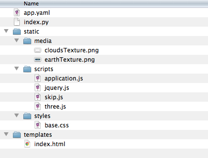

Homework
If any of you are unable to run WebGL content in Chrome or Safari, download the latest version of Firefox. If this does not solve your problem please contact me immediately. It is vitally important that you can create and view WebGL content on your machine.
You have three tasks this week: install Google’s App Engine, download a new code template, and modify a portion of it. Have this completed by Friday’s class. (No need to email me on Thursday.)
1. Install App Engine
Browsers these days are rather strict about same origin policies and other security concerns—even when running code straight from your Desktop. To work around these issues you’ll need to run your code (and assets) from a server. Google’s App Engine makes it incredibly easy to run a lightweight server right on your machine with little fuss. Download the Google App Engine SDK for Python here: https://developers.google.com/appengine/downloads
If you're still running OS X Snow Leopard you’ll need to download and install
Mac OS X 64-bit/32-bit x86-64/i386 Installer (2.7.3) first,
then in App Engine’s preferences set your Python Path to /Library/Frameworks/Python.framework/Versions/2.7/bin/python.
This text input field is a bit wonky; make sure you hit Enter while your cursor is still in that input field.
(See article Python path setting is only saved if the user presses "enter", but the UI does not indicate this for more information.)
2. Download the App Engine template
Your homework template code comes ready to run on App Engine. Download the new code package: threeAppEngine.zip. Here’s what you’ll find inside:

Once you’ve downloaded and decompressed this new template, go into App Engine and click File > Add Existing Application... and browse to your template files and click Ok. Now that you’ve told App Engine where to find your app, click the green Run button to start your app. The exact URL may vary, but App Engine will likely use Port 8080 so open up your browser and point it to http://localhost:8080/.
When the page loads you should see Earth (and some cloud cover) rotating. If you do not see this it may mean your hardware / browser combination is not capable of or not configured to run WebGL. If that’s the case please email me immediately.
3. Five locations to visit
Look at the code in /static/scripts/application.js
and have a read through the comments.
Lines 94 through 144 are where your homework sits—the code for dropping pins onto the map.
Take out the five pins I’ve created and replace them with five pins of your own:
What five places do you want to visit—either again or for the first time—before it’s too late.
You’ll need to have the latitude and longitude for location you wish to use.
(Search engines are your friend here.)
Use my code as a guide.
That’s it. We’re going to use this assignment as a jumping off point for more fun with Three.js on Friday. If you run into any trouble with App Engine let me know, and if we don’t resolve these issues ahead of class we can tend to them then.